Data Cleaning for this project involves cleaning 2 seperate data entities: the record dataframe full of qualitative and quantitative data for NBA players from 2012-2020, and the text data collected from Twitter.
Cleaning the text data from Twitter first required isolating the words and hashtags themselves, removing any links, pictures, or whatever else was included in the tweet that is not a word. This process was undertaken for each file containing a unique search using this code. Once completed,the next step was to use sklearn's CountVectorizer. Once a corpus is compiled, using CountVectorizer is a great way to create a Document Term Matrix (DTM) which can then be converted into a pandas dataframe through the process shown below.
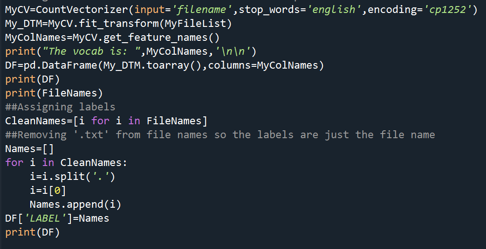After this process was undertaken, a clean text dataframe with labels was created that can be used for further analysis and exploration.
Cleaning the raw record data was very involved. Before any cleaning, the raw data has 84 columns and 4837 rows. First, issues regarding duplication and incorrect/missing values discovered in the data gathering process were dealt with. Then, features were generated based on the raw data to create some useful variables. Once, the expanded raw data was established, it was time to tackle missing and incorrect values as well as reducing dimesnionality. Unlike the ideal cleaning, this process was far from linear, and resulted in multiple rounds of cleaning data as mistakes were noticed.
The first issue regards duplicate entries. In the raw dataset, if a player was traded mid-season, they have 2 entries for the same season, one for each team. To rectify this, a new dataframe was created with new entries for those that were duplicated, the consitutent rows were dropped from the old dataframe, and the 2 were joined together and sorted by year. There were 586 players that changed teams during a season between 2012-2020. They accounted for 1234 duplicate rows, 25.51% of the rows in the raw data. The new dataset now has 4189 rows (648 were removed) and the same 1210 unique players. The code used to create a duplicate dataset required identifying the different column types and distinguishing between those that were objects (and were not different between duplicate entries), columns that needed to be summed, and those that needed to be averaged. For averaging the player stats, a simple mean would not work as the stats have to be weighted based on the games played for each team. To accomplish this, the games played column data points were collected for the duplicates and weights were assigned.
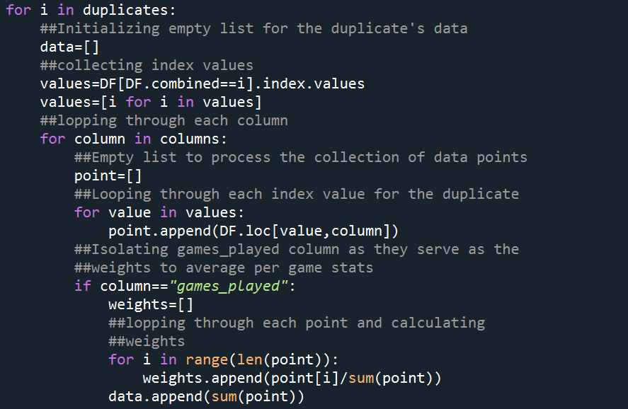Next up in the loop, it was time to identify the team changes column, those that needed to be summed, and those that needed to be averaged with the weights. For team changes, realizing that each duplicate was created due to a team change, a way to initialize the value for these duplicates was to use the length of the duplicates index values and subtract by 1 to return the amount of team changes they had in that season. This column gets added to in a later step when the dataframe includes only one entry per player per year. The rest of the for loop identifies different column types and deals with them appropriately, before appending them into a dataframe and appending that dataframe to the parent raw dataframe after removing the duplicate rows.
Now that the duplicates are removed, it is time to fix the experience column. As a reminder, the experience column currently holds the same value for a given player regardless of the year, which is incorrect. To resolve this, a nested for loop was created to collect the index values for each player, and then loop through those index values subtracting an extra year from the current value each time. During the first attempt, some players who had been injured for a whole year throughout their career (like Joel Embiid and Ben Simmons) had negative values. To fix this, a lower bound on experience was created at 0.
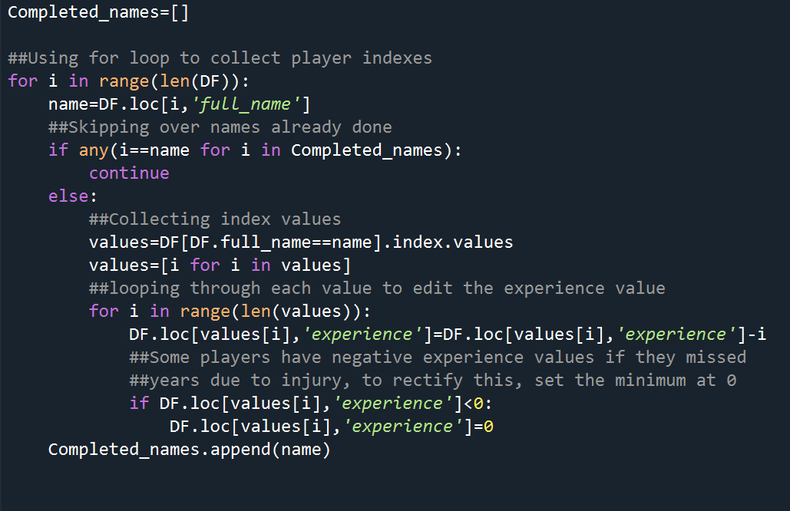Returning to the team changes column, currently all players except for the duplicates have a value of 0 in the data. To find team changes for each player (and add additional team changes for the duplicates) a for loop was used to collect index values, loop through them and collect the various team names. A neat trick was utilized to ensure that what happened to the experience column (stagnant values over time) would not happen here. By reversing the chronology of the data to go from 2013-2020, it allowed for looping through each index value, adding the team name to an empty list, and counting the unique teams in that list (at the current entry year and prior) and subtracting by 1 (because the first team does not reflect a team change).
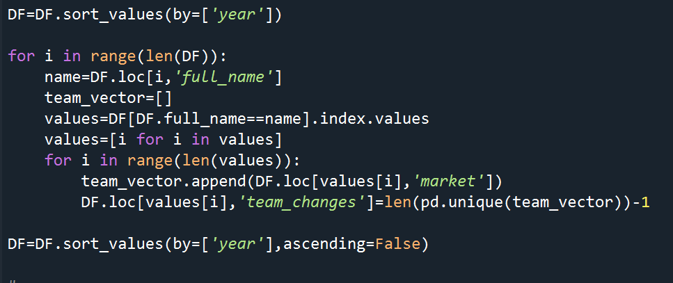It is important to note that this method of counting team changes does not account for players who return
to the same team for a second stint or even multiple stints. However, this was purposeful in that the team changes column is meant to indicate
the amount of different teams a player has been on and ideally would reflect a quasi-notion of locker room presence (the more teams, the worse a presence, on average
(obviously not a perfect metric)). If a player keeps returning to the same team, their team changes count would not change as they were likable/good enough
for the team to want them back.
The raw data has a lot of qualitative information already (height,weight,experience), but another helpful piece of information, especially in basketball
is age. The raw data contains birthdate in year-date-month format. With the help of python's datetime library a conversion to age as a year was utilized to form
this new piece of information that is much more interpretable than the birthdate in date format. The full code
for the changes applied to the experience, team changes, and age column lead to the creation of a new but still raw dataframe that was more useful to start the
cleaning process. The new raw dataframe can be downloaded here.
Now for cleaning the record dataset in R. The first step is to reduce dimensionality by removing unnecessary columns. The raw data has 82 columns(2 less than the first raw dataframe as they had 2 extra indexing columns that were removed) and 4837 rows. Right away columns that had irrelevant information for analysis like team id, player id, coach ejections and fouls (which have nothing to do with the players), birthdate, the combined name column created for ease of merging dataframes, and rookie year can be removed. This was helpful, but not nearly enough. Also, taking a closer look at the data revealed that many stats had 4 columns tracking attempts, makes, points, and percentage. This is excessive as all information can be retained solely with the inclusion of makes and percentage, as makes track volume and percentage tracks efficiency. One other quick change was to combine the plus and minus columns into one plus-minus column which made more sense as plus-minus is the actual stat that is used in the NBA. Next up was to examine missing values. Immediately, it was clear that many of the columns had only 5 missing values and upon getting the indexes of these missing values, those with 5 missing values shared the same indexes. Clearly, these rows are empty and as a result, they were dropped from the data. Now, only a few columns have missing values (Primary Positon, ejections, foulouts, fast break %,second chance %, 2k Ratings, Salary, All NBA, All Nba team, and plus minus) that have to be dealt with. Primary Positions was easy to deal with in that there were only 2 missing values and the values in the Position column could be used to manually input a position. Ejections and foulouts were not so easy to deal with. Below is the table and histogram for ejections (which looks very similar to foulouts).
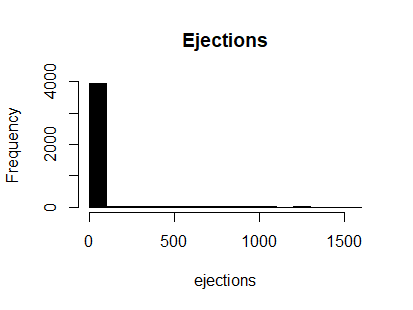 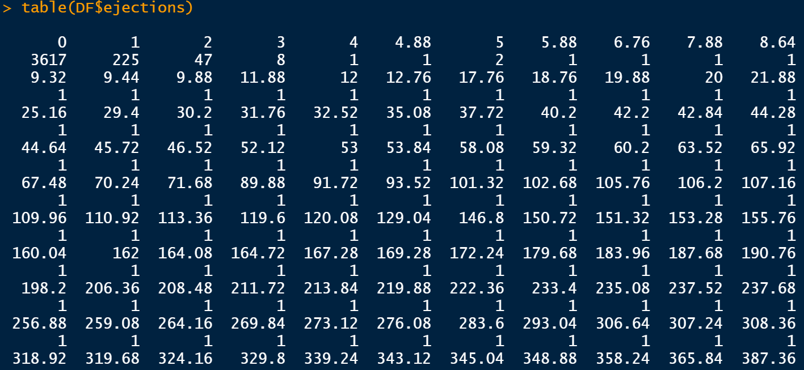
These column are simply messed up, the vast majority of the inputs should be 0 and all should be an integer, which is not the case. However,
it appears that the entries after 2015 are accurate. However, these column are unimportant in that ejections and foulouts are relatively
random and any pattern of aggressive behavior that could be important will be captured in tech fouls, fouls, and flagrant fouls. As a result,
these columns were dropped.
Next, taking a look at fast break %, it became clear that there were way too many 0 values, as seen in the histogram below:
After a manual look at the data, it became apparent that certain statistics were not included from 2016 and before. The implicated columns were points in paint made/%, fouls drawn, offensive fouls, fast break made/%, second chance made/%, and plus minus all appear to not be collected. This leaves 2 options, delete rows pre-2017 or delete these columns as they are unusable. Fortunately, most of these can probably be dropped with minimal issue based on prior knowledge and an awareness that many of these variables are the result of other processes that are captured in other statistics. With that in mind, it is a good idea to look at correlations betweem these variables to confirm the hunch. A sample dataframe with only the data from 2017 and after had to be used to compute the correlations. The variables of interest are on the y-axis.
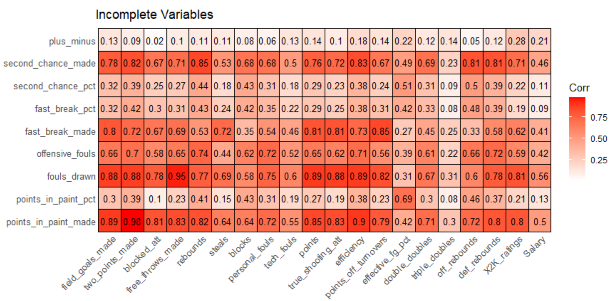
Many of these variables are highly correlated with other variables which was expected. Of particular note is the correlation of each of these
variables with the Salary variable (the last column). These correlations are not high, and those that are in a relative sense (.4-.56) are highly correlated
with other variables. The most questionable variables (those with relatively high correlations with salary (.4-.5) and relatively low correlations
with other variables (.8 range)) offensive fouls and fast break made have basketball logic in favor of dropping them. In the case of
offensive fouls, these calls are largely random and more of a product of a defenders efforts to get position, rather than something the
offensive player did. With fast break made, a similar logic can be applied in that the elements leading to a made fast break bucket
are captured in points, turnovers, and points off turnovers.
Moving on to the only other columns with missing values Salary, All Nba, All Nba team, and 2k Ratings, these columns are important,
particularly salary. At first glance, the Salary column has 533 missing rows accounting for 12.7% of the data, not bad, not great. Upon looking,
at the dataset of those rows with missing Salary values, it became clear that something was amiss.
A large amount of the entries missing Salary values appear to have names with suffixes like Jr. or roman numerals or some form of punctuation in the name like a dash. The original merging of the Salary, All NBA, and 2k Ratings values came from the nested for loop technique used in the "Data Gathering" tab and relied on the combination of a players name and year for matching. However, this is problematic if the datasets account for punctuation and name suffixes differently. To rectify this issue, these data points had to be remerged using a more thorough technique that accounts for differences in punctuation and inclusion of suffixes.
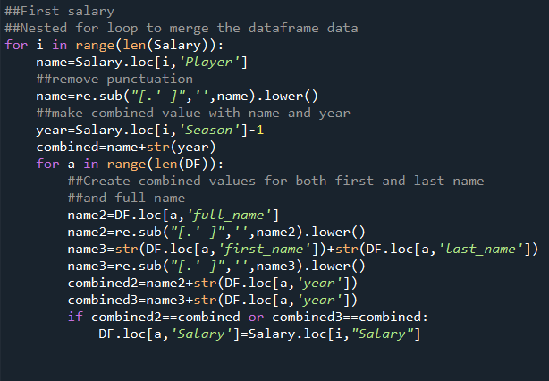This fix worked for 122 salary values, 117 2k rankings, and 7 All NBA data points. Missing Salary data points now account fro 10% of the data. Salary data is not balanced at all with a large postive skew (it's median is half as much as its mean) and the varaible is not highly correlated with any other variable enough to make an educated guess for the missing values. As a result of these findings, and the importance of the Salary column, the remaining 411 missing values will be dropped. Moving on to the 2k rankings column, after dropping the missing salary rows, there are 740 missing values, accounting for 19.6% of the data. Unlike Salary, the 2k rankings are very balanced with a mean of 75.9, and a standard deviation of 6.
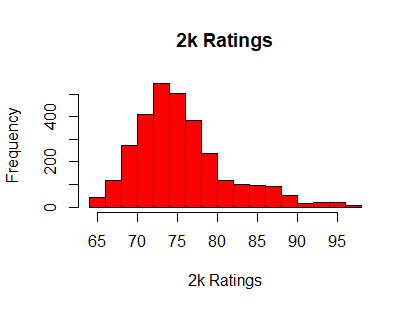The data has a slight positive skew due to the handful of elite players at the top so for filling in missing values, the median is a more appropriate metric. When checking for correlations with other variables, the only meaningful ones were Field goals made and Efficiency, both of which were unusable for making comparisons due to the difference in scale between the variables. As a result, plugging in the median for the missing values is the way to go. After making this change, the new mean is 75.8 with a standard deviation of 5.17. Although this new histogram looks a little odd with the abundance of 75 values, but the overall change of the distribution is negligible.
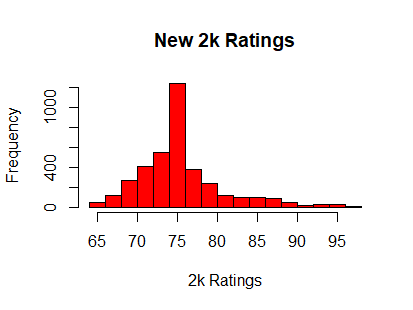Next, to deal with the All Nba columns, these are formatted as character and numeric columns when they should be facotr columns. Using R' ifelse() function and a for loop, the All Nba category was reformatted to have 0's mark a non All Nba player and 1 to mark that they are. For the All Nba team column, the NA values were filled in as 0's and the column was reformatted as a factor with 4 levels (0-4).
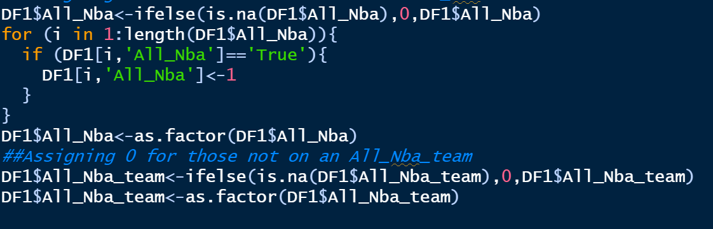
Now there are no more missing values in the raw data. Currently there are 3773 rows and 46 columns in the data, far too many variables. To
reduce dimensionality, it is time to start looking at what columns can be dropped. Off the bat, excessive columns like team city, first name,
and last name can be dropped as there are already other columns for team and player name. Having three columns for rebounds
(offensive, defensive, and total) is also unnecessary, it makes sense to keep solely the total rebounds column and drop the others. Also,
field goals made and points are exceedingly highly correlated (.98) which makes sense given that a player can only score points when they make
shots. Having both is unnecessary and points provides more valuable information so field goals made is dropped.
Now for a look at the offensive metrics:
Two points made, free throws made, points, and true shooting att are all correlated highly with eachother as well as with efficiency.
Given that true shooting att is a stat that aggregates field goals, 3-pt field goals and free throws (Formula is FGA+.44*FTA) it is safe to drop
two points made, free throws made, and points. Surprisingly, true shooting is not that highly correlated with 3pt metrics. Field goals %
is also redundant as it is captured in effective field goal percentage, true shooting percentage, and 2pt percentage.
To further reduce dimensionality, there are 3 columns that look at fouls (tech fouls, flagrant fouls, and personal fouls). Before combining
fouls into one total foul column, tech fouls needs to be adjusted to be a per game stat. Upon doing so, 65 missing values were created due to
division by 0 meaning 65 players had 0 games played. Upon this realization, these 65 rows were droppped. At this point, the data now has 3708
rows and 36 columns. Upon dealing with these rows, the columns were summed and a new total fouls column was created. The biggest contributor
to this column is personal fouls. To confirm that this does not change the data too much, the personal fouls data is fairly balanced with
a mean of 1.77 and a standard deviation of .73.
After the adjustment to a total fouls column, the new mean is 1.8 with a standard deviation of .76. The right end of the distribution became slightly fatter. This is in line with expectation as those who have higher personal fouls are likely to have more technical and flagrant fouls and vice versa for those who do not, hence why the right end of the distribution changes but the left side does not.
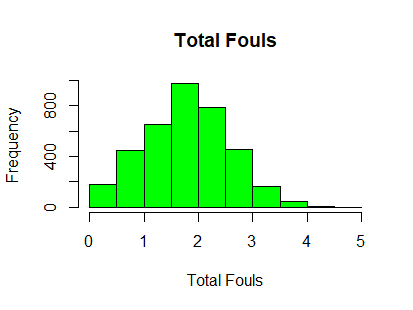Blocked attempts and minutes are two other columns that can be dropped. Minutes is highly correlated with true shooting attempts and efficiency (.93 and .91 respectively) and as a result does not add much new information to the data that is not already captured. Blocked attempts is also correlated with a couple of variables, but more importantly, the nature of the stat. It tracks how many shots a player takes that get blocked, which essentially is just a missed shot. Given how many other stats track offensive output, this one is significantly less important, and not very informative.
Further reducing dimesionality, given the formulas used for calculating True Shotting% and Effective field goal% ((FG + .5*3PA)/FGA) (Notice that this formula gives a 1.5 weighting to 3 pt shots to account for the fact that these shots are worth 3 instead of 2), it is redundant to have these stats on top of three pt %, two point %, and free throw %. Additionally, double doubles and triple doubles can be removed as they represent single outstanding games rather than a pattern of the player's ability to perform consistently.
When looking through the remaining columns of data to ensure nothing was amiss, three maximum values, one for games played,
true shooting %, and effective field goal % stood out. For games played, the maximum value was 83, although seasons are only 82 games long.
At first, this appeared to be incorrect, however, it turns out that the 2 players who had played 83 games were traded mid season.
Unfortunately, upon looking at these rows of data it was revealed that one of them had a 0 entry for team changes (which is incorrect).
Due to this error, and the non-existent correlations with this variable and anything other than experience means it can be dropped.
With regard to true shooting %, there is an issue as the max value should be right around 1.08, the highest ever recorded
but instead it is 1813; way off, especially for a percentage. Looking at the data, it was revealed that 127 rows had incorrect
true shooting percentages (of over 1.08). A look at the true shooting percentage without the outliers shows a very balanced variable
with a mean of .51 and a standard deviation of .14.
As a result, the outliers are replaced with the median of true shooting % (.53). By doing so, the new true shooting percent variable still has a mean of .51 and a standard deviation of .14.
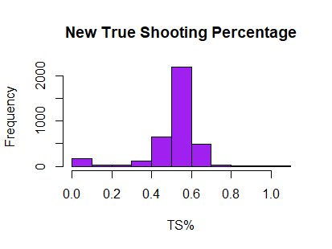Lastly, to fix effective field goal percentage, the outlying max value of 1.5 was standalone as all the rest were at or under 1 which is withing range. Due to the fact that the mistake only affects one row, this row was dropped.
With all the variables clean, it is time to tidy up the data. Some of the claculations performed resulted in values having many decimal points. As a result, all percentage columns were multiplied by 100 and then all numeric columns were rounded to 2 decimal places. This data was written to a csv file. Additionally, a normalized csv using min max normalization on numeric variables was created to ease further analysis. The formula for min-max normalization is:
The cleaning process lead to the removal of 1,130 rows (23.4% of the raw rows) and 49 columns (58.3% of the raw columns). The clean dataset now has 3707 rows and 25 columns in both standard and normalized form that can be used for further analysis. The full code used to clean the record data in R is linked here.